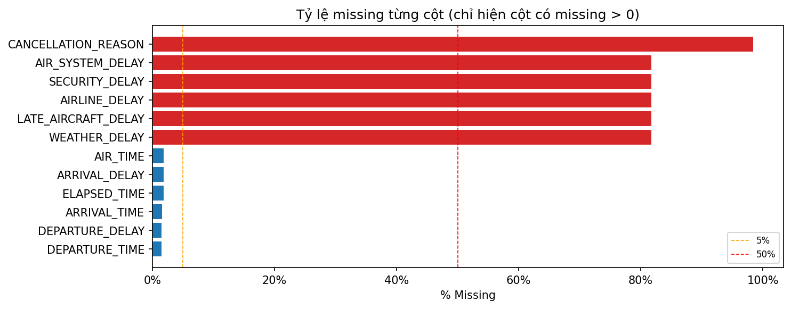
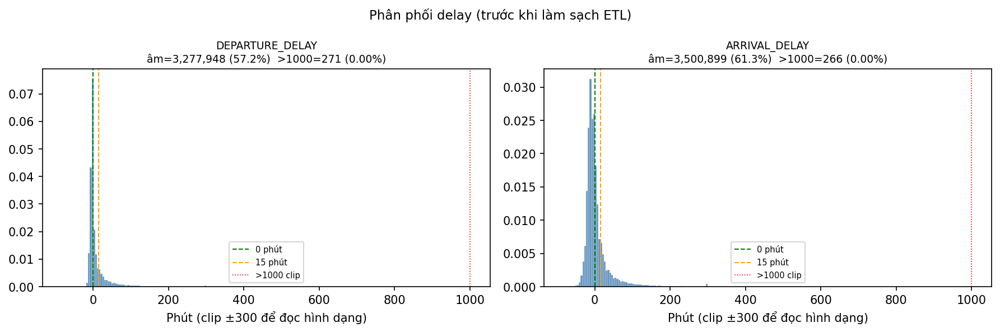
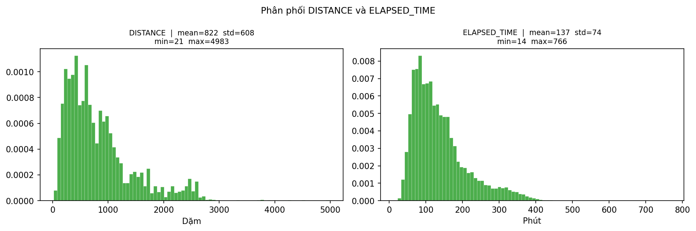
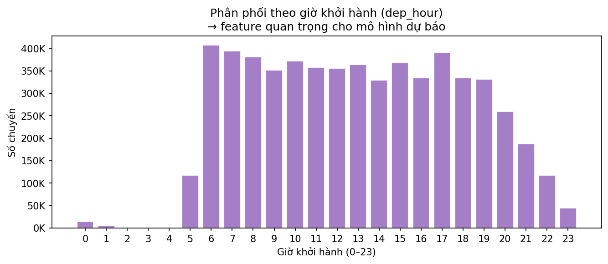

| column | dtype | n_missing | pct_missing | etl_action |
|---|---|---|---|---|
| CANCELLATION_REASON | object | 5729195 | 98.4600 | CÂN NHẮC DROP cột — quá nhiều missing |
| WEATHER_DELAY | float64 | 4755640 | 81.7200 | fillna(0) — NaN delay = không có trễ loại này |
| LATE_AIRCRAFT_DELAY | float64 | 4755640 | 81.7200 | fillna(0) — NaN delay = không có trễ loại này |
| AIRLINE_DELAY | float64 | 4755640 | 81.7200 | fillna(0) — NaN delay = không có trễ loại này |
| SECURITY_DELAY | float64 | 4755640 | 81.7200 | fillna(0) — NaN delay = không có trễ loại này |
| AIR_SYSTEM_DELAY | float64 | 4755640 | 81.7200 | fillna(0) — NaN delay = không có trễ loại này |
| ELAPSED_TIME | float64 | 105071 | 1.8100 | fillna / dropna — tỷ lệ thấp |
| ARRIVAL_DELAY | float64 | 105071 | 1.8100 | fillna(0) — NaN delay = không có trễ loại này |
| AIR_TIME | float64 | 105071 | 1.8100 | fillna / dropna — tỷ lệ thấp |
| ARRIVAL_TIME | float64 | 92513 | 1.5900 | fillna / dropna — tỷ lệ thấp |
| DEPARTURE_TIME | float64 | 86153 | 1.4800 | fillna / dropna — tỷ lệ thấp |
| DEPARTURE_DELAY | float64 | 86153 | 1.4800 | fillna(0) — NaN delay = không có trễ loại này |
| SCHEDULED_DEPARTURE | int64 | 0 | 0.0000 | OK — không cần xử lý |
| MONTH | int64 | 0 | 0.0000 | OK — không cần xử lý |
| DISTANCE | int64 | 0 | 0.0000 | OK — không cần xử lý |
| SCHEDULED_ARRIVAL | int64 | 0 | 0.0000 | OK — không cần xử lý |
| DESTINATION_AIRPORT | object | 0 | 0.0000 | OK — không cần xử lý |
| DIVERTED | int64 | 0 | 0.0000 | OK — không cần xử lý |
| CANCELLED | int64 | 0 | 0.0000 | OK — không cần xử lý |
| ORIGIN_AIRPORT | object | 0 | 0.0000 | OK — không cần xử lý |
| FLIGHT_NUMBER | int64 | 0 | 0.0000 | OK — không cần xử lý |
| AIRLINE | object | 0 | 0.0000 | OK — không cần xử lý |
| DAY_OF_WEEK | int64 | 0 | 0.0000 | OK — không cần xử lý |
| DAY | int64 | 0 | 0.0000 | OK — không cần xử lý |
| YEAR | int64 | 0 | 0.0000 | OK — không cần xử lý |



| column | n_valid | mean | std | min | p25 | median | p75 | max | n_negative | pct_negative | n_gt1000min | pct_gt1000min | n_iqr_outlier | pct_iqr_out | etl_decision |
|---|---|---|---|---|---|---|---|---|---|---|---|---|---|---|---|
| DEPARTURE_DELAY | 5732926 | 9.3700 | 37.0800 | -82.0000 | -5.0000 | -2.0000 | 7.0000 | 1,988.0000 | 3277948 | 57.1800 | 271 | 0.0000 | 736242 | 12.8400 | fillna(0); giữ âm (đến sớm); giữ >1000 (thật); nhãn nhị phân trung hoà |
| ARRIVAL_DELAY | 5714008 | 4.4100 | 39.2700 | -87.0000 | -13.0000 | -5.0000 | 8.0000 | 1,971.0000 | 3500899 | 61.2700 | 266 | 0.0000 | 512002 | 8.9600 | fillna(0); giữ âm (đến sớm); giữ >1000 (thật); nhãn nhị phân trung hoà |
| ELAPSED_TIME | 5714008 | 137.0100 | 74.2100 | 14.0000 | 82.0000 | 118.0000 | 168.0000 | 766.0000 | 0 | 0.0000 | 0 | 0.0000 | 291084 | 5.0900 | fillna(median); loại <0 nếu có |
| AIR_TIME | 5714008 | 113.5100 | 72.2300 | 7.0000 | 60.0000 | 94.0000 | 144.0000 | 690.0000 | 0 | 0.0000 | 0 | 0.0000 | 296342 | 5.1900 | kiểm tra thêm nếu cần |
| DISTANCE | 5819079 | 822.3600 | 607.7800 | 21.0000 | 373.0000 | 647.0000 | 1,062.0000 | 4,983.0000 | 0 | 0.0000 | 0 | 0.0000 | 349511 | 6.0100 | giữ nguyên; outlier xa theo IQR là chuyến dài thật |
| SCHEDULED_DEPARTURE | 5819079 | 1,329.6000 | 483.7500 | 1.0000 | 917.0000 | 1,325.0000 | 1,730.0000 | 2,359.0000 | 0 | 0.0000 | 0 | 0.0000 | 0 | 0.0000 | kiểm tra thêm nếu cần |
| DEPARTURE_TIME | 5732926 | 1,335.2000 | 496.4200 | 1.0000 | 921.0000 | 1,330.0000 | 1,740.0000 | 2,400.0000 | 0 | 0.0000 | 0 | 0.0000 | 0 | 0.0000 | kiểm tra thêm nếu cần |
| AIR_SYSTEM_DELAY | 1063439 | 13.4800 | 28.0000 | 0.0000 | 0.0000 | 2.0000 | 18.0000 | 1,134.0000 | 0 | 0.0000 | 3 | 0.0000 | 73597 | 6.9200 | fillna(0); giữ âm (đến sớm); giữ >1000 (thật); nhãn nhị phân trung hoà |
| SECURITY_DELAY | 1063439 | 0.0800 | 2.1400 | 0.0000 | 0.0000 | 0.0000 | 0.0000 | 573.0000 | 0 | 0.0000 | 0 | 0.0000 | 3484 | 0.3300 | fillna(0); giữ âm (đến sớm); giữ >1000 (thật); nhãn nhị phân trung hoà |
| AIRLINE_DELAY | 1063439 | 18.9700 | 48.1600 | 0.0000 | 0.0000 | 2.0000 | 19.0000 | 1,971.0000 | 0 | 0.0000 | 179 | 0.0200 | 112616 | 10.5900 | fillna(0); giữ âm (đến sớm); giữ >1000 (thật); nhãn nhị phân trung hoà |
| LATE_AIRCRAFT_DELAY | 1063439 | 23.4700 | 43.2000 | 0.0000 | 0.0000 | 3.0000 | 29.0000 | 1,331.0000 | 0 | 0.0000 | 14 | 0.0000 | 100733 | 9.4700 | fillna(0); giữ âm (đến sớm); giữ >1000 (thật); nhãn nhị phân trung hoà |
| WEATHER_DELAY | 1063439 | 2.9200 | 20.4300 | 0.0000 | 0.0000 | 0.0000 | 0.0000 | 1,211.0000 | 0 | 0.0000 | 11 | 0.0000 | 64716 | 6.0900 | fillna(0); giữ âm (đến sớm); giữ >1000 (thật); nhãn nhị phân trung hoà |
| column | n_unique | n_null | pct_null | top5_values |
|---|---|---|---|---|
| AIRLINE | 14 | 0 | 0.0000 | WN(1,261,855), DL(875,881), AA(725,984), OO(588,353), EV(571,977) |
| ORIGIN_AIRPORT | 628 | 0 | 0.0000 | ATL(346,836), ORD(285,884), DFW(239,551), DEN(196,055), LAX(194,673) |
| DESTINATION_AIRPORT | 629 | 0 | 0.0000 | ATL(346,904), ORD(285,906), DFW(239,582), DEN(196,010), LAX(194,696) |
| CANCELLATION_REASON | 4 | 5729195 | 98.4600 | B(48,851), A(25,262), C(15,749), D(22) |
| MONTH | 12 | 0 | 0.0000 | 7(520,718), 8(510,536), 3(504,312), 6(503,897), 5(496,993) |
| DAY_OF_WEEK | 7 | 0 | 0.0000 | 4(872,521), 1(865,543), 5(862,209), 3(855,897), 2(844,600) |
| check | n_rows_checked | n_matched | n_unmatched | pct_lost_in_etl | top_unmatched |
|---|---|---|---|---|---|
| flights.AIRLINE → dim_airline | 5819079 | 5819079 | 0 | 0.0000 | — |
| flights.ORIGIN_AIRPORT → dim_airport | 5819079 | 5332914 | 486165 | 8.3550 | 10397(5632), 13930(4902), 11298(3854), 11292(3167), 12892(3112) |
| flights.DEST_AIRPORT → dim_airport | 5819079 | 5332914 | 486165 | 8.3550 | 10397(5652), 13930(4910), 11298(3801), 12892(3131), 11292(3130) |
etl/transform.py và etl/extract.py.
Sinh tự động bởi scripts/eda_before_etl.py